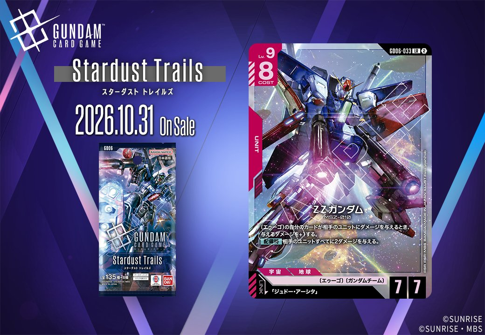
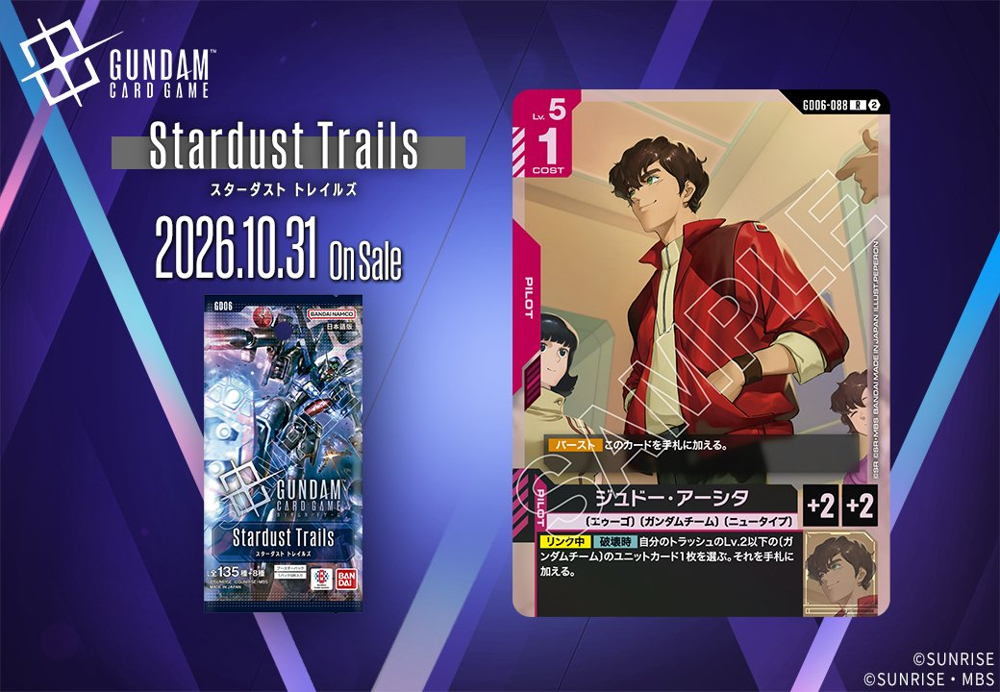

GD06「Stardust Trails」から、新カード2枚が公開されました。赤のUNIT「ΖΖガンダム」（GD06-033）と赤のPILOT「ジュドー・アーシタ」（GD06-088）は、同日公開のUNITとPILOTがリンクで結ばれる組合せです。「ΖΖガンダム」はリンク条件に「ジュドー・アーシタ」を名前で指定しており、同じ拡張に収録された同じ色の1枚で条件を満たせます。

ΖΖガンダム (GD06-033)
| 色 | 赤 | タイプ | UNIT |
| Lv | 9 | コスト | 8 |
| AP | 7 | HP | 7 |
| 特徴 | 〔エゥーゴ〕、〔ガンダムチーム〕 | ||
| リンク条件 | 「ジュドー・アーシタ」 | ||
効果: 〔エゥーゴ〕の自分のカードが相手のユニットにダメージを与えるとき、与えるダメージを+1する。【配備時】相手のユニットすべてに2ダメージを与える。
ΖΖガンダムはLv.9・コスト8と重いものの、AP7/HP7に盤面処理を備えたユニットです。常在効果「〔エゥーゴ〕の自分のカードが相手のユニットに与えるダメージ+1」はこのカード自身にも適用されるため、【配備時】の2ダメージは実質3ダメージとして相手のユニットすべてに届きます。同じ〔エゥーゴ〕を持つΖガンダムの2ダメージも3に伸び、処理できる範囲が広がるでしょう。リンク先のジュドー・アーシタは、【リンク中】【破壊時】にトラッシュのLv.2以下の〔ガンダムチーム〕のユニットカード1枚を手札に加えられます。【配備時】とは別タイミングの効果で、このユニットが除去された後の手札の減少を補えます。



ジュドー・アーシタ (GD06-088)
| 色 | 赤 | タイプ | PILOT |
| Lv | 5 | コスト | 1 |
| 補正 AP | 2 | 補正 HP | 2 |
| 特徴 | 〔エゥーゴ〕、〔ガンダムチーム〕、〔ニュータイプ〕 | ||
効果: 【バースト】このカードを手札に加える。【リンク中】【破壊時】自分のトラッシュのLv.2以下の〔ガンダムチーム〕のユニットカード1枚を選ぶ。それを手札に加える。
ジュドー・アーシタは赤のパイロットで、Lv.5、コスト1、AP2/HP2です。【バースト】で手札に加わるため、シールドから捲れても無駄になりません。軸になるのは【リンク中】【破壊時】の効果で、リンク状態のユニットが破壊されると、トラッシュからLv.2以下の〔ガンダムチーム〕ユニットカードを1枚回収できます。同日公開のΖΖガンダムとはリンクが成立する組合せです。ΖΖガンダムは【配備時】の全体2ダメージを持つため相手に狙われやすく、除去されても次の展開札が手札に戻る点が噛み合っています。回収対象はLv.2以下に限られるので、該当する〔ガンダムチーム〕ユニットをデッキに一定数入れておく必要があります。
関連カード
-
 Ζガンダム(GD06-035)NEW赤系 — 同色・共通特徴: エゥーゴ、ガンダムチーム（新カード）
Ζガンダム(GD06-035)NEW赤系 — 同色・共通特徴: エゥーゴ、ガンダムチーム（新カード） -
 百式(GD06-046)NEW赤系 — 同色・共通特徴: エゥーゴ、ガンダムチーム（新カード）
百式(GD06-046)NEW赤系 — 同色・共通特徴: エゥーゴ、ガンダムチーム（新カード） -
 ルー・ルカ(GD06-091)NEW赤系 — 同色・共通特徴: エゥーゴ、ガンダムチーム（新カード）
ルー・ルカ(GD06-091)NEW赤系 — 同色・共通特徴: エゥーゴ、ガンダムチーム（新カード） -
ジュドー・アーシタ(GD06-088)NEW赤系 — 同色・共通特徴: エゥーゴ、ガンダムチーム（新カード）
-
 ニャアン(GD03-092)赤系デッキ内採用率6.1% (453デッキ)
ニャアン(GD03-092)赤系デッキ内採用率6.1% (453デッキ) -
 ハマーン・カーン(GD02-091)赤系デッキ内採用率0.5% (37デッキ)
ハマーン・カーン(GD02-091)赤系デッキ内採用率0.5% (37デッキ) -
 アマテ・ユズリハ（マチュ）(ST06-009)赤系デッキ内採用率0.4% (29デッキ)
アマテ・ユズリハ（マチュ）(ST06-009)赤系デッキ内採用率0.4% (29デッキ) -
 ハサウェイ・ノア(ST08-010)赤系デッキ内採用率0.2% (14デッキ)
ハサウェイ・ノア(ST08-010)赤系デッキ内採用率0.2% (14デッキ) -
 消えぬ執念(GD02-109)赤系デッキ内採用率0.1% (5デッキ)
消えぬ執念(GD02-109)赤系デッキ内採用率0.1% (5デッキ)